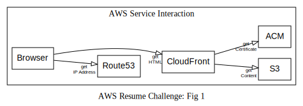
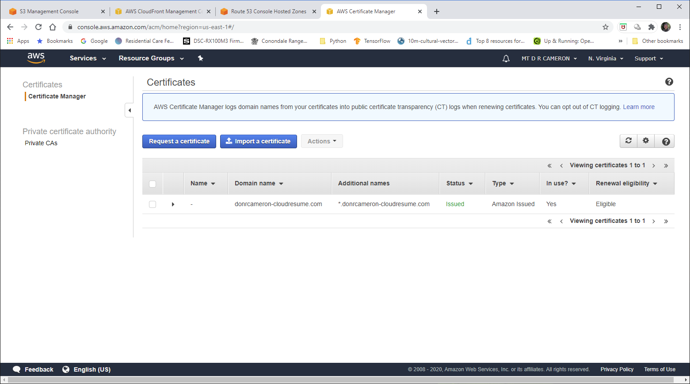

Cloud Resume Challenge Part 1
!dot -o images/arch-01.svg -T svg arch-01.txt
Introduction¶
I decided to respond to the Cloud Resume Challenge. This was a challenge to put your resume up on the Internet, in a fully cloud-enabled way, using Amazon Web Services (AWS) offerings (see https://cloudresumechallenge.dev/). I found it interesting, a little bit challenging, and am learning more about AWS.
I chose to use the URL donrcameron-cloudresume.com; I could have tried to reserve all possible variations of donrcameron-cloudresume.*, but this would have been expensive. The cost of a domain name though AWS was about AUS $ 13, but this will change as the exchange rate bounces around.

The process flow is that the browser makes a DNS request to resolve donrcameron-cloudresume.com. Route 53 replies with the IP address of the CloudFront service. CloudFront enforces the use of HTTPS, and this requires the use of a pre-provisioned certificate, previously obtained from ACM.
The end result of this is a trusted webpage (HTML) delivered securely to the users browser.
Now, to some extent I cheated for this part of the challenge, for this prototype: I did most of the provisioning for this initial prototytpe via the AWS Management Console GUI. If I had been a true DevOps, I would have done it all either via the Command Line Interface (CLI), or from Python. This would have created a repeatable process, that could be documented, and placed under configuration control.
I have added repeating all this via the CLI/ API, as a TODO for later in the challenge.
AWS Certificate Management¶
The developer interface to the ACM service console is show below. It shows that I have linked the certificate the domain name I have chosen, and sub-domains (like www.donrcameron-cloudresume.com

{kind=link}
User visible details of ACM Certificate¶
{kind=link}
User visible security status of the webpage¶
{kind=link}
AWS CloudFront¶
CloudFront acts as a front end to the AWS file storage facilities, and caches content at some or all of the edge of the cloud. This totally unnecessary for me, but I ticked the box for storage at all edges anyhow.
The main value that CloudFront delivers to me, is that it enforces the use of HTTPS to access my content.
DevOps view of Cloudfront - 1¶
{kind=link}
This is the front page of the CloudFront as shows all the CloudFront Distributions we have created (in my case, one).
DevOps view of CloudFront - 2¶
{kind=link}
If we look at the details of our CloudFront Distribution, we can see the link to the Domain Names we have chosen, and the link to the pre-provisioned SSL Certificate (from ACM).
DevOps view of CloudFront - 3¶
{kind=link}
In the Origins tab, we can see where CloudFront is sourcing the content: an AWS S3 Bucket, set up earlier.
DevOps view of CloudFront - 4¶
{kind=link}
Finally, in the Behaviours, we can confirm that insecure HTTP requests will be redirected to HTTPS.
AWS Simple Storage System (S3)¶
S3 provides storage of the files that make up my resume webpage. In this prototype, these are the HTML content for my resume, an error page (for somebody who says donrcameron-cloudresume.com/x, returning a 404 Not Found page is preferred), and a Cascading Style Sheet (CSS) specification file. The latter allows the style of my resume to be tweeked, seperately from tweeking the content.
The collection of files that are to grouped together are called a Bucket.
It is possible to run a website entirely from an S3 Bucket, but it appears the CloudFront is needed to enforce HTTPS, and manage ACM Certificates.
DevOps view of S3 - 1¶
{kind=link}
The initial S3 page (in the AWS Console) shows us the S3 bucket we have created previously (in fact, as the first step).
DevOps view of S3 - 2¶
{kind=link}
Here we see the files that we uploaded previously (after testing them locally on our hard-drive)
DevOps view of S3 - 3¶
{kind=link}
This shows where we could enable Static Website Hosting. Choosing this option allows us to check that the S3 Bucket can act as a website, but we have to use the endpoint (obscure URL) that AWS gives us, rather than our chosen domain-name. I used this initially, but then re-created the Bucket with this option tirned off.
DevOps view of S3 - 4¶
{kind=link}
By default S3 Buckets are private. In order to have a website that the whole world can access, we have to turn off blocking of public access (double negative here!).
DevOps view of S3 - 5¶
{kind=link}
This is where we allow the world read access to our website.
Note that (for this prototype) we have not bothered to set the ListBucket policy: this means that when a user types to acess a non-existent file, we will reply "Access Denied", not "File Not Found". C'est la vie.
Conclusions¶
So now I have secure website as below:

The next step is to add a page load counter, but that is another blog post :)